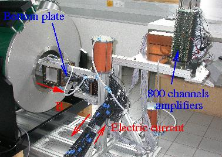

Anisotropic turbulence
Turbulence is a fascinating physical phenomenon which enables flows to dissipate very large amounts of kinetic energy. In laminar flows, energy can only be dissipated by viscous friction, which occurs in small and rather localised regions where strong velocity gradients exist, for instance near the walls of a pipe. In intense flows, these regions do not produce enough dissipation, yet, viscous friction is still the only mechanism available. Nature's answer to this paradox is to reorganise the flow in such a way that strong velocity gradients invade the bulk of the flow. Such gradients are created by intense flow fluctuations, over a spectrum of lengthscales ranging from that of the flow domain to very small ones where viscous dissipation is most efficient. One of the most remarkable features of turbulence is to operate in a radically different way in 2D and quasi-2D flows than it does in 3D flows. 3D turbulence is characterised by a direct energy cascade: inertial effects break down large vortices into smaller ones, and repeat the process until the energy is transfered to the dissipative scales where viscous dissipation acts. In 2D turbulence, on the contrary, vortices agglomerate into larger ones under the effect of 2D inertia, thus transferring their energy to the larger scales. These in turn exert considerable friction on the flow boundaries where dissipation is enhanced.
If the fluid is electrically conducting, applying a magnetic field to it has two effects: firstly, it elongates the vortices along the field direction, thus introducing a strong anisotropy. Secondly, the electric currents created in the process dissipate energy by Joule heating. MagnetoHydroDynamic (MHD) turbulence therefore introduces a competition between two dissipation mechanisms, but most remarkably, it can be either 3D or quasi-2D, if the vortices are elongated up to boundaries of the fluid domain. We explore these phenomena both with theory and experiment: We have built a modular rig where vortices and turbulence are generated in liquid metals, and diagnosed by measuring electric potentials in a large number of points in and around the flow, as well as by ultra-sound velocimetry. We are also developing a new type of spectral method that takes advantage of the mathematical properties of the governing equations to perform more efficient numerical simulations of MHD turbulence.
|  | ||||
| Forced MHD turbulence in a periodic domain [read article] | Experiment where MHD turbulence is electrically driven in a cubic vessel placed in the bore of a superconducting magnet [read article] | |||
| Contours of electric potential on opposite walls of the vessel,both normal to the magnetic field. Large vortices extend between the walls whilst smaller ones don't. [read article] | ||||